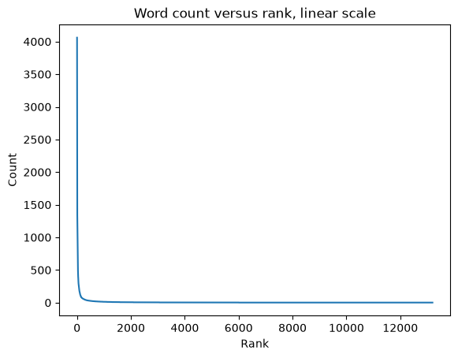
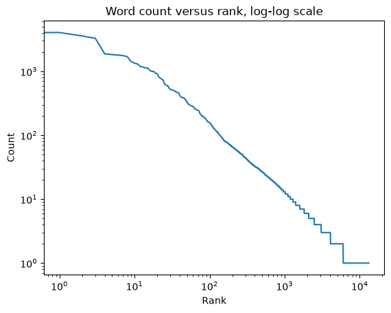

Text analysis with Python#
Click here to run this notebook on Colab
from os.path import basename, exists
def download(url):
filename = basename(url)
if not exists(filename):
from urllib.request import urlretrieve
local, _ = urlretrieve(url, filename)
print("Downloaded " + local)
BASE = "https://github.com/AllenDowney/CompStats/raw/master/"
download(BASE + "pg42671.txt")
%matplotlib inline
import matplotlib.pyplot as plt
Word Frequencies#
Let’s look at frequencies of words, bigrams and trigrams in a text.
The following function reads lines from a file and splits them into words:
def iterate_words(filename):
"""Read lines from a file and split them into words.
Skips the Project Gutenberg header and license.
"""
with open(filename) as f:
for line in f:
if line.startswith('*** START OF'):
break
for line in f:
if line.startswith('*** END OF'):
break
for word in line.split():
yield word.strip()
Here’s an example using Pride and Prejudice, by Jane Austen, from Project Gutenberg. wc is a Counter of words, that is, a dictionary that maps from each word to the number of times it appears:
# PRIDE AND PREJUDICE
# By Jane Austen
# https://www.gutenberg.org/cache/epub/42671/pg42671.txt
filename = 'pg42671.txt'
from collections import Counter
wc = Counter(iterate_words(filename))
Here are the 20 most common words:
wc.most_common(20)
[('the', 4061),
('to', 4045),
('of', 3578),
('and', 3282),
('a', 1874),
('her', 1831),
('was', 1795),
('in', 1763),
('I', 1696),
('that', 1420),
('not', 1342),
('she', 1303),
('be', 1187),
('his', 1168),
('had', 1126),
('as', 1119),
('he', 1036),
('with', 998),
('for', 996),
('it', 935)]
Word frequencies in natural languages follow a predictable pattern called Zipf’s law (which is an instance of Stigler’s law, which is also an instance of Stigler’s law).
We can see the pattern by lining up the words in descending order of frequency and plotting their counts (4061, 4045, 3578) versus ranks (1st, 2nd, 3rd, …):
def counter_ranks(wc):
"""Returns ranks and counts as lists."""
return zip(*enumerate(sorted(wc.values(), reverse=True)))
ranks, counts = counter_ranks(wc)
plt.plot(ranks, counts)
plt.xlabel('Rank')
plt.ylabel('Count')
plt.title('Word count versus rank, linear scale');

Huh. Maybe that’s not so clear after all. The problem is that the counts drop off very quickly. If we use the highest count to scale the figure, most of the other counts are indistinguishable from zero.
Also, there are more than 10,000 words, but most of them appear only a few times, so we are wasting most of the space in the figure in a regime where nothing is happening.
This kind of thing happens a lot. A common way to deal with it is to compute the log of the quantities or to plot them on a log scale:
ranks, counts = counter_ranks(wc)
plt.plot(ranks, counts)
plt.xlabel('Rank')
plt.ylabel('Count')
plt.xscale('log')
plt.yscale('log')
plt.title('Word count versus rank, log-log scale');

This (approximately) straight line is characteristic of Zipf’s law.
n-grams#
On to the next topic: bigrams and trigrams.
from itertools import tee
def pairwise(iterator):
"""Iterates through a sequence in overlapping pairs.
If the sequence is 1, 2, 3, the result is (1, 2), (2, 3), (3, 4), etc.
"""
a, b = tee(iterator)
next(b, None)
return zip(a, b)
bigrams is the histogram of word pairs:
bigrams = Counter(pairwise(iterate_words(filename)))
And here are the 20 most common:
bigrams.most_common(20)
[(('of', 'the'), 457),
(('to', 'be'), 419),
(('in', 'the'), 371),
(('of', 'her'), 246),
(('to', 'the'), 246),
(('I', 'am'), 233),
(('of', 'his'), 225),
(('had', 'been'), 194),
(('could', 'not'), 167),
(('that', 'he'), 165),
(('she', 'had'), 164),
(('for', 'the'), 157),
(('and', 'the'), 156),
(('it', 'was'), 156),
(('she', 'was'), 147),
(('he', 'had'), 143),
(('I', 'have'), 140),
(('on', 'the'), 140),
(('to', 'her'), 139),
(('Mr.', 'Darcy'), 137)]
Similarly, we can iterate the trigrams:
def triplewise(iterator):
a, b, c = tee(iterator, 3)
next(b)
next(c)
next(c)
return zip(a, b, c)
And make a Counter:
trigrams = Counter(triplewise(iterate_words(filename)))
Here are the 20 most common:
trigrams.most_common(20)
[(('as', 'soon', 'as'), 47),
(('she', 'could', 'not'), 43),
(('I', 'do', 'not'), 38),
(('that', 'he', 'had'), 36),
(('I', 'am', 'sure'), 34),
(('could', 'not', 'be'), 30),
(('as', 'well', 'as'), 28),
(('it', 'would', 'be'), 27),
(('by', 'no', 'means'), 26),
(('would', 'have', 'been'), 26),
(('that', 'he', 'was'), 26),
(('that', 'it', 'was'), 25),
(('that', 'she', 'had'), 25),
(('one', 'of', 'the'), 24),
(('I', 'am', 'not'), 23),
(('and', 'she', 'was'), 23),
(('not', 'to', 'be'), 21),
(('it', 'was', 'not'), 21),
(('*', '*', '*'), 21),
(('Mrs.', 'Bennet', 'was'), 20)]
Markov analysis#
And now for a little fun. I’ll make a dictionary that maps from each word pair to a Counter of the words that can follow.
from collections import defaultdict
d = defaultdict(Counter)
for a, b, c in trigrams:
d[a, b][c] += trigrams[a, b, c]
Now we can look up a pair and see what might come next:
d['Mr.', 'Darcy']
Counter({'had': 12,
'was': 9,
'is': 7,
'would': 6,
'has': 4,
'might': 4,
'and': 4,
'with': 3,
'looked': 3,
'could': 3,
'to': 3,
'then': 2,
'took': 2,
'in': 2,
'may': 2,
'it': 2,
'so': 2,
'gave': 2,
'than': 2,
'should': 2,
'soon': 1,
'danced': 1,
'walked': 1,
'speaking': 1,
'mean,"': 1,
'only': 1,
'stood': 1,
'bowed.': 1,
'replied': 1,
'smiled;': 1,
'felt': 1,
'did': 1,
'corroborated': 1,
'just': 1,
'without': 1,
'bequeathed': 1,
'chose': 1,
'liked': 1,
'often': 1,
'is."': 1,
'can': 1,
'contradict': 1,
'he': 1,
'more': 1,
'seemed': 1,
'for': 1,
'before': 1,
'by': 1,
'they': 1,
'spoke': 1,
'only,': 1,
'drew': 1,
'related': 1,
'came': 1,
'give': 1,
'himself': 1,
'walk': 1,
'changed': 1,
'improves': 1,
'approaching': 1,
'invite': 1,
'handed': 1,
'himself;': 1,
'called': 1,
'afterwards': 1,
'were': 1,
'appeared.': 1,
'acquainted': 1,
'called,': 1,
'asked': 1,
'found,': 1,
'looked,': 1,
'acknowledged,': 1,
'returned': 1,
'must': 1,
'rise': 1,
'appeared': 1,
'sends': 1,
'exposed': 1,
'half': 1,
'about': 1})
Here are the most common words that follow “into the”:
d['into', 'the'].most_common(10)
[('room.', 4),
('breakfast', 3),
('neighbourhood."', 2),
('country', 2),
('dining-room,', 2),
('breakfast-parlour,', 1),
('room', 1),
('avenue."', 1),
('drawing-room;', 1),
('drawing-room', 1)]
The following function chooses a random word from the suffixes in a Counter:
import random
def choice(counter):
"""Chooses a random element."""
return random.choice(list(counter.elements()))
choice(d['into', 'the'])
'belief'
Given a prefix, we can choose a random suffix:
prefix = 'into', 'the'
suffix = choice(d[prefix])
suffix
'army,"'
Then we can shift the words and compute the next prefix:
prefix = prefix[1], suffix
prefix
('the', 'army,"')
Repeating this process, we can generate random new text that has the same correlation structure between words as the original:
for i in range(100):
suffix = choice(d[prefix])
print(suffix, end=' ')
prefix = prefix[1], suffix
she added, "Lizzy, I _insist_ upon her to try for information. Mr. Darcy is all very right; who should omit an occasion of dictating to others. In the afternoon Lydia was exceedingly pleased with the hope we may see something of Captain Carter would be an unpleasant thing." "You may readily comprehend," she added, "But if I went to him before he is _such_ a man!" "Yes, yes, they must marry. A clergyman like you the trouble of talking longer of his arrival was dreaded by the more necessary to be executed, and, while examining the mother, and heard all
With a prefix of two words, we typically get text that flirts with sensibility.
Copyright 2019–2026 Allen Downey
Code license: MIT License
Text license: Creative Commons Attribution-NonCommercial-ShareAlike 4.0 International